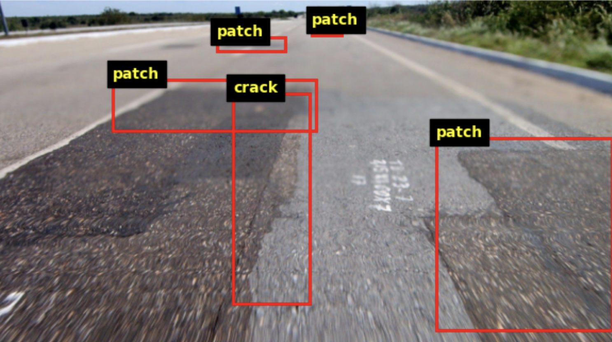
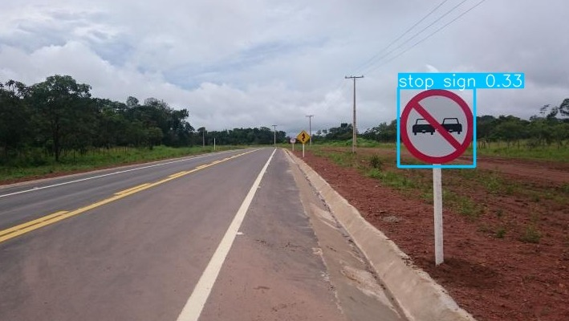

Computer vision · Public sector
Road inspection from video
An ensemble of YOLO models that watches road footage and marks potholes, cracks and patches on its own.
Government standardthe inspection system used by Ceará's Court of Accounts (TCE-CE)
Patentedthe detection system is patented
Kilometers at a timedrive-by smartphone or vehicle footage in, defect report out
The problem
Highway concessionaires and audit bodies need objective evidence of pavement condition. Manual inspection is slow, subjective and inconsistent across reviewers, and footage piles up kilometers at a time.
How it works
- CaptureSmartphone or vehicle-mounted video of the road.
- DetectClass-specialized YOLO models (potholes, cracks, patches, signage) run in parallel.
- FuseCustom IoU + NMS fusion with consensus and confidence voting cuts false positives.
- ReportAnnotated video and defect counts per road section.
Deterministic codeAI model
Key decisions
- One model per defect class, each tuned for that class's failure modes, then fused.
- Per-version SQLite datasets make retraining on new footage reproducible.
- Drop-in image and video scripts, so field teams process footage without touching model code.
In the field


Stack
- Python
- PyTorch
- Ultralytics YOLO
- OpenCV
- SQLite dataset versioning
- Google Colab
My role
Researcher (Computer Vision), Federal University of Ceará, within Ceará's Chief Scientist Program (FUNCAP).